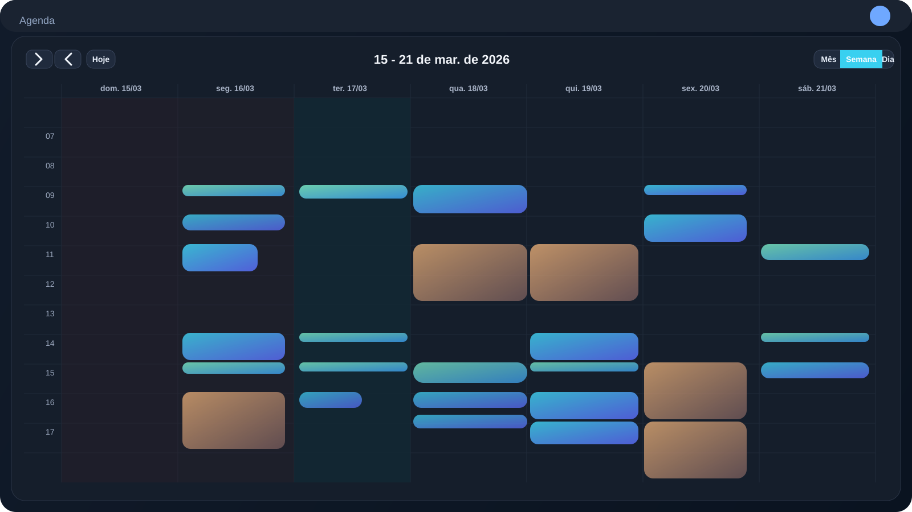
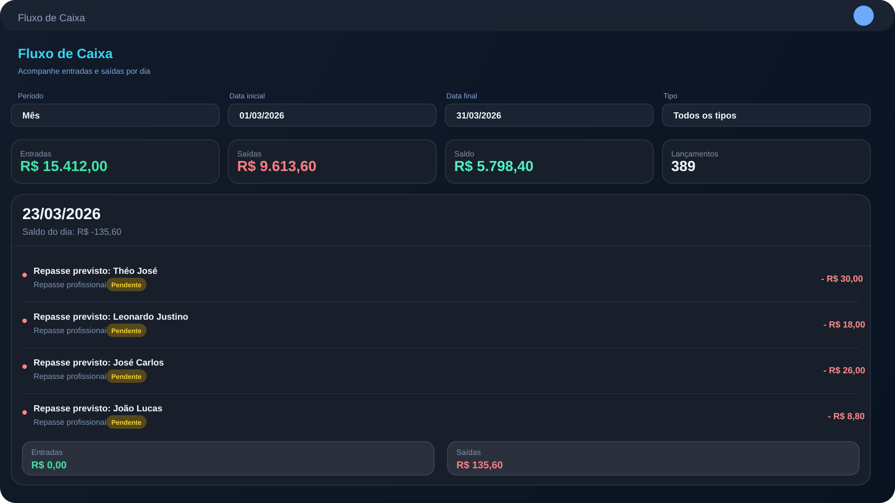
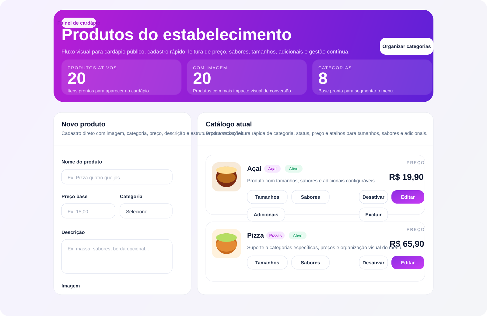

Desenvolvedor Full Stack • PHP • Laravel • APIs REST • Produto • Automação
Desenvolvedor full stack para produtos e operações reais.
Sou Leonardo Justino, desenvolvedor full stack com mais de 4 anos de experiência em sistemas web, integrações e automações. Meu foco é construir ferramentas que resolvem o dia a dia de verdade, com boa arquitetura, leitura rápida e evolução contínua.
Disponível para oportunidades e freelas seletivos
Foco em produto, operação e UX funcional
O que me diferencia
Não entrego só interface bonita. Entrego estrutura, clareza e software que aguenta rotina real.
Meu trabalho fica melhor quando o problema é concreto: operação, fluxo, regra de negócio, dados e experiência de uso precisando funcionar juntos.
Leio o cenário antes do código
Entendo a demanda, organizo a lógica e só então transformo isso em fluxo, regra e interface com direção clara.
Projeto pensando no depois
Arquitetura, manutenção, escala e legibilidade fazem parte da entrega desde o início, não aparecem como correção futura.
Construo para uso contínuo
Gosto de sistemas vivos, com operação diária, integração, leitura rápida e evolução constante baseada no que realmente acontece.
Sobre mim
Mais do que codar, eu sei entender contexto, decidir direção e executar com consistência.
Atuo no desenvolvimento de aplicações web com foco em negócio, integrações REST, automação e sustentação de fluxos que precisam funcionar sem ruído.
Também desenvolvo projetos autorais com atenção forte a arquitetura, experiência de uso e organização técnica, porque software bom precisa continuar bom depois que entra em operação.
Atuação atual
Desenvolvimento web com foco em entrega ponta a ponta
PHP, Laravel, JavaScript, APIs, bancos relacionais e manutenção de sistemas em produção.
Formação contínua
IA, dados e segurança como base de evolução
Pós em Ciência de Dados e Inteligência Artificial concluída, com especialização em segurança em andamento.
Perfil profissional
Calmo para executar, firme para decidir
Consigo sair da conversa com o cliente, organizar o problema e transformar isso em algo utilizável.
Case principal
AgendaIdeal é o projeto que melhor representa meu nível de profundidade hoje.
Ele reúne agenda, operação, financeiro, repasses, estoque e visão administrativa em uma experiência pensada para rotina real, não para demo vazia.
Agenda
Semana operacional

Financeiro

Administração
Projetos e cases
Projetos reais para mostrar profundidade de produto, operação e execução técnica.
Além do AgendaIdeal, estes cases ajudam a mostrar como eu penso SaaS, rotina operacional, integrações e interfaces feitas para uso real.
SaaS para restaurantes
Case real
Delivery SaaS

Sistema SaaS para restaurantes desenvolvido em Laravel 12, com cardápio público por estabelecimento, pedidos online, integração com Asaas para cobrança, CRM e gestão de produtos, categorias, sabores, tamanhos e adicionais. Minha atuação foi no sistema e na plataforma operacional; a landing institucional do produto é separada. A estrutura foi pensada para operação multi-tenant e para atender pizzarias, açaiterias, hamburguerias e outros modelos de delivery.
- Laravel 12
- Multi-tenant
- Asaas
- Cardápio público
- Pedidos online
- CRM
Ver landing do produto
Case sob confidencialidade
Financeiro
Projeto público
Cashflow Snapshot
Resumo financeiro com entradas, saídas, categorias, persistência local e ações manuais para demonstrar domínio de interface orientada a dados.
- JavaScript
- Persistência local
- UI de dados
Operação
Projeto público
Service Order Board
Quadro operacional com drag and drop, criação de ordens, edição rápida e persistência local para simular uma rotina de atendimento e acompanhamento.
- Kanban
- Drag and drop
- LocalStorage
Stack e frentes
Tecnologia, negócio e experiência de uso andando juntos.
Minha stack principal gira em torno de back-end com PHP e Laravel, APIs REST, JavaScript no front, bancos relacionais e automação. O diferencial está em conectar isso com produto, clareza de fluxo e contexto de negócio.
PHP
Laravel
JavaScript
TypeScript
APIs REST
MySQL
PostgreSQL
SQL
HTML
CSS
Automação
Python
Git
UX operacional
IA aplicada
Cibersegurança
Contato
Se a ideia é construir algo sólido, útil e bem resolvido, podemos conversar.
Estou aberto a oportunidades, freelas e projetos em que eu possa contribuir com desenvolvimento full stack, organização técnica e evolução de produto com mais clareza e confiança.
Resposta direta e visão prática
Se o projeto precisa sair do papel com clareza técnica, boa comunicação e execução consistente, esse é exatamente o tipo de trabalho em que gosto de entrar.